Agent-centric-real-to-sim · 归档于 2026-11-05
AgenticRSR
Agentic RSR: Real-to-Sim-to-Real through Scene Reconstruction and Execution-Grounded Robot Policies
归档到 Agent-centric real-to-sim：agent 重建工作台、检查任务交互，再开发能在真机运行的策略；第二相关 Robotic harness（Codex agent 写 policy.py 并在执行中决定重试）。论文和 arXiv 都没给项目页；代码和场景数据"will be made publicly available"，暂无链接。
TL;DR
- Problem
- 给一段绕工作台的视频、一句任务和已知机器人，要得到支持这个任务的米制仿真，并让在里面开发的策略能在真机跑；以前的工作只做其中一段。
- Idea
- URDF 当尺子定尺度 → DSH agent 按 depth 和颜色的标量反馈改场景 → MuJoCo 探针查交互 → Codex agent 分三遍写
policy.py→ 同一套 API 加经验记忆上真机。 - Result
- 18 个场景全过 visual check，Depth MAE 0.0808 m（参考是视频估的深度，不是实测）；真机 8/18 任务成功（44.4%），sim 10/18（55.6%），conversion 80.0%（Table 4），每任务几次 trial 没写。
Problem
重建和策略各做各的：场景只求像，程序没处排练，sim 里学到的东西带不到真机
Running example · 后面每个 stage 都跟着它走
F5 · Stack two bowls（Franka FR3）：输入一段绕工作台慢拍的 RGB 视频 V、任务 q = Stack two bowls（Table 5）、已知机器人资产 U = Franka URDF；黑桌上一只蓝碗、一只绿碗（Fig. 5）→ 想要：一个以米为单位、能抓能放的 MuJoCo 场景，一份在里面练好的 policy.py，最后真 Franka 把绿碗叠到蓝碗上。
flowchart TD IN["例子输入
Franka 绕拍视频
Stack two bowls"]:::example IN --> A1["Gaussian 重建
Re³Sim 等 3 个
出图或 Gaussian"] A1 --> AX["缺可用 depth
和物体几何
Lab 23.7–25.4"]:::gap IN --> B1["SimFoundry
生成语义相近的
digital cousin"] B1 --> BX["不是这张桌子
depth .5711 m
BBox .1922 m"]:::gap IN --> C1["Agentic R2S
agent 修 twin
不写策略"] C1 --> CX["停在场景
无 code policy
无 recovery"]:::gap IN --> D1["CaP、Instruct2Act
写好程序
就去执行"] D1 --> DX["出了预想难改
Real 25.6 / 27.8
18 任务均值"]:::gap
F5 的数字来自 Table 10（列 5，早先的 Codex 批次），Real SR 来自 Table 4，论文没有逐任务的策略结果，所以 F5 没有自己的成功率。"坏在哪"：第 1 条出自 §4.2（缺 depth 是输出格式不兼容，"not an inherent inability"）；第 2 条是推断，依据 §3.1 "rather than generate a semantically similar scene variant"；第 3 条只有 Table 1 的能力对比，论文没跑它；第 4 条出自 §5 和 §4.4（看错相似物体、单 wrist 视角被挡、物体没认出）。Fig. 5 图注没写任务名，它紧接 §4.4 的 bowl stacking，我按 F5 读（推断）。
根本问题：场景的好坏、策略的好坏、真机的结果，三者从不用同一个任务去检验。 这篇的切入点：用同一个任务把三段串起来：机器人定尺度，评估器把关场景，同一个 task-level 接口贯穿 sim 和真机。
Related work
| 相关工作 | 解决什么 | 怎么解决 | 和本文的区别 |
|---|---|---|---|
| 同一问题 · 别的解法 | |||
| Gaussian real-to-sim Re³Sim、RL-GSBridge、RoboSimGS、GSWorld | 真实场景 → 可学策略的高保真仿真 | 高保真渲染耦合交互几何 | 建完不再修、不写程序（Table 1，Re³Sim）→ 本文 agent 按标量反馈反复改 mesh 场景 |
| Digital cousins SimFoundry、ACDC | 视频或图 → 可交互、保留 affordance 的场景 | 生成语义相近的变体，用于评测和训练 | 只求相近 → 本文复原被拍的这张桌子，并定到米 |
| Agentic Real2Sim Chen et al. 2026a | 录像里的机器人-物体交互 → episodic twin | VLM agents + simulator-in-the-loop 修正 | 止于 twin，sim-to-real 未确立（Table 1）→ 本文接到 code policy 和真机 |
| 相似做法 · 别的问题 | |||
| 写好就跑的 code policy Code as Policies、Instruct2Act | 语言指令 → 可执行机器人程序 | LLM 组合感知和控制 API | 程序出了预想难改后续策略（§5）→ 本文 agent 在 checkpoint 决定继续、重试或改写 |
| 多轮 coding agent CaP-X；同路 Inner Monologue、ASPIRE、ENPIRE、RoboClaw | 用执行反馈迭代策略或技能 | CaP-X：多轮写码，sim 和真机共用工具 | 练习场不是被拍的工作台（Table 1，CaP-X 无重建）→ 本文在这张桌子的重建里练 |
来源：论文 §1、§2 Related Work、Table 1、§3.1、§5，未另行检索。
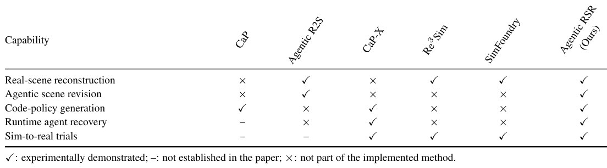
Level 1 · Big picture
用已知机器人当尺子建场景，在场景里练程序，再把程序和经验带上真机
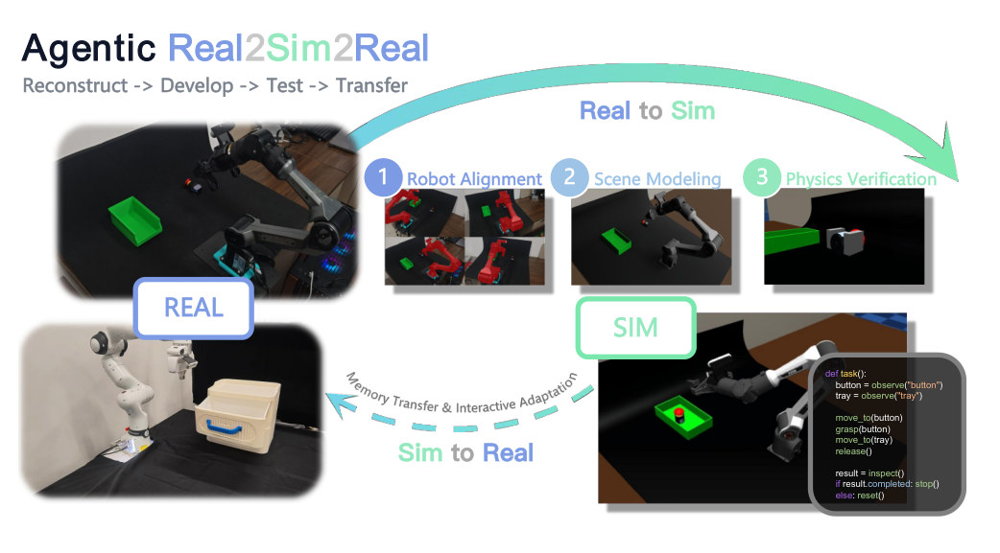
怎么读这张图
- 左上 REAL：Agilex Piper 工作台和绿色托盘，这是输入视频的画面（看起来是 P3，推断）；我们的例子换成 Franka 和两只碗，入口一样。
- 上方 "Real to Sim" 三个圆点：1 Robot Alignment（红色 robot mask，四个视角）= Stage 1；2 Scene Modeling = Stage 2；3 Physics Verification（夹爪特写）= Stage 3。
- 右下 SIM 和代码窗口：场景里跑
def task()，observe、动作、inspect，完成就 stop，否则 reset = Stage 4。这段是示意：App. D.2 禁止 pick/place 和 grasp helper，真实 API 是move_pose、gripper、move_trajectory。 - 下方 "Sim to Real" 虚线箭头：标着 "Memory Transfer & Interactive Adaptation"，带过去的是 policy 和经验记忆，物体要在真机上重新定位 = Stage 5。
- 左下 REAL：Franka 和抽屉盒，图上两台机器人混着画，论文确实用了这两台（Table 5）。
flowchart LR I["Input
视频 + 任务 + URDF"]:::example --> M["Sim 里开发
米制场景 + policy.py"] M --> O["真机执行
绿碗叠上蓝碗"]
两个不同的 agent 系统：场景由 DSH 编排（主配置 Claude Opus 5.5），策略由 Codex 写（GPT-6 Astra，high reasoning）。DSH = DeepSeek Harness，是执行框架，不是模型。
Level 2 · Stages
5 个 stage，外加贯穿 Stage 4–5 的 execution-grounded loop
flowchart TD IN["Input
视频 V、q、Franka URDF"]:::example --> S1 S1["1 · Metric registration
URDF → 米制相机和 depth"] --> S2["2 · Scene refinement
F5 depth .080 m"] S2 --> S3["3 · MuJoCo checks
碗 → open_container"] S3 --> S4["4 · Policy, 3 passes
真值 → 视觉 → 随机化"] S4 --> S5["5 · Real execution
Fig. 5：✗ ✓ ✗ ✓"] click S1 href "#stage-1" click S2 href "#stage-2" click S3 href "#stage-3" click S4 href "#stage-4" click S5 href "#stage-5"
点击 stage 展开 Level 3 细节；观察-动作循环和接口见 execution-grounded loop。论文 App. D 把 Real-to-Sim 叫 Stage 1–3，Fig. 4 又把策略叫 Stage 1–3，这里策略的三段一律叫 Pass 1–3。
Level 3 · Details
每个 stage 的细节
Stage 1 Robot-anchored metric registration 视频 V + URDF → 米制的 4 个 reference camera 和 depth，世界系 = robot base
- Why：VGGT-Ω 的 depth 和相机只有相对尺度；画面里唯一知道真实尺寸的东西就是机器人。
- 输入约束：相机慢慢绕工作台，每帧都看得到机器人、场景和任务物体（§4.1）。
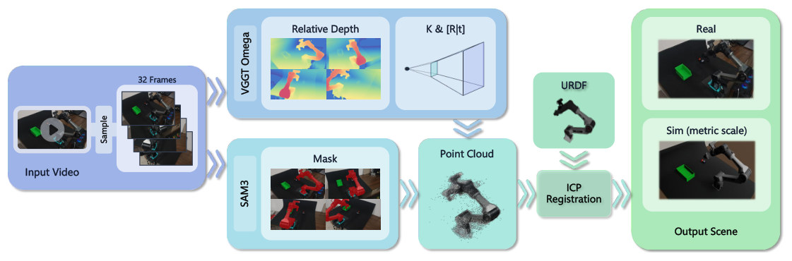
符号（先看这张表）
| 符号 | 白话 | 例子里 |
|---|---|---|
| Kv, Ev, dv | VGGT-Ω 估的第 v 帧内参、世界到相机外参、深度（单位是重建单位，不是米） | 32 帧各一组 |
| B, G | 机器人底座的坐标系（米）；VGGT 重建的坐标系（任意单位） | Franka 在 [0,0,0] |
| s | 尺度：1 米等于多少重建单位 | 数值未报告 |
| TB→G | 把米制 URDF 放进重建坐标系的相似变换（缩放 + 旋转 + 平移，T(x) = sRx + t） | 数值未报告 |
| r | 观测到的机器人有多大：点云 5% 到 95% 分位之间的距离 | 数值未报告 |
| L, Lf | 给候选解排序的无量纲损失；最终解的损失 | Franka 均值 0.11364 |
| d50 | 把模型投影回画面后，深度残差的中位数，换算成毫米 | Franka 35.3 mm |
怎么读这张图
- 左 "Input Video" → "32 Frames"：采样 32 帧，其中 4 帧选作后面一直固定的 reference view。
- 上排 "VGGT Omega"："Relative Depth" 和 "K & [R|t]"，也就是相对深度和相机，这一步还没有米。
- 下排 "SAM3" → "Mask"：机器人标成红色，prompt 是
robotic arm with base and camera（App. D.1）。 - 中 "Point Cloud"：只把 mask 内的深度反投影，得到观测到的机器人点云。
- "URDF" ↓ "ICP Registration"：URDF 是米制的，配上去的缩放就是尺度 s。
- 右 "Output Scene"：Real 和 "Sim (metric scale)"：应用 TB→G 的逆，把场景和相机搬到 robot-base 系；深度除以 s 变成米，相对几何不变。
flowchart TD a["观测点云
mask 内 depth 反投影"] --> b["128 个 rotation 候选
打分，留 top 3"] b --> c["Multi-scale Sim(3) ICP
URDF 表面对点云"] c --> d["细化
两轮平移、旋转、缩放
再 coarse-to-fine 旋转"] d --> e["按 L 取最低
Franka L_f 0.11364"] e --> f["输出
场景和相机进 robot-base 系
depth ÷ s = 米"]:::win
排序损失 L 的六项（App. B.1，权重加起来是 1）
| 权重 | 项 | 白话 |
|---|---|---|
| 0.50 | 1 − mask IoU | URDF 投影到画面后，和 SAM3 mask 的平均重合度，占一半 |
| 0.12 | 1 − mask recall | 同一对 mask 的平均 recall |
| 0.14 | min(5ρm→o, 1) | 一个方向的点云距离：60 分位最近邻距离除以机器人大小 |
| 0.08 | min(5ρo→m, 1) | 反方向的同一距离（下标 m、o 我读作模型和观测，论文没展开） |
| 0.08 | 1 − O | 覆盖：最近邻距离小于机器人大小 5% 的点所占比例，两方向取较小 |
| 0.08 | min(d50VGGT/r, 1) | 投影深度残差；没有有效重叠时直接罚满 |
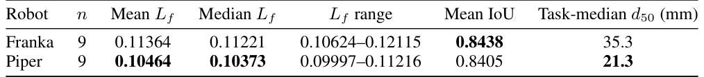
- 这不是尺度精度：Table 7 是拟合统计，论文写明它们 "distinct from reference-pose error"；d50 本身用 s 换算，所以 s 错了它看不出来（后半句是推断）。
- 没有独立尺子：全文没有专门验 s 的实验（卷尺、标定板）；App. C.2 的 42 个 "measured objects" 有 CD 和 BBox，但参考几何从哪来没写。
- 没写的：视频里机器人的关节角怎么得到，URDF 按什么姿态去配，论文没说。
Running example 在这一步
F5 的视频 → 32 帧 → Franka 在 [0,0,0] 的世界系，4 个相机从此冻结。F5 自己的配准值未报告，只有 Franka 九段 capture 的聚合（Table 7）。
Stage 2 Feedback-guided agentic scene reconstruction q + 4 张 reference RGB + 初始 Blender 场景 → 通过 joint visual check 的 Blender 场景
- Why：agent 看图能快速调整，但只看图分不出"看着像"和"位置对"。
- How：DSH 开独立的 session：planning 只看 q 和 4 张图写 plan；refinement 按 plan 改几何、布局、材质、灯光。
- 冻结：机器人和 4 个相机由执行程序锁死，agent 改不了；runner 检查冻结资产后才算数。
- agent 看到的反馈：只有总 depth 误差和总颜色误差两个标量，加上图；depth 图和误差图不给看（App. D.1）。
- 谁说了算：接受由程序评估器决定，不是 agent 自评。
flowchart TD P["Planning session
写物体层级、尺寸、能力
蓝碗、绿碗、黑桌"] --> R["Refinement session
几何 → 自检 → 外观 → 自检"] R --> X["External runner
跑 Blender 脚本、查冻结
存 candidate、渲 4 view"] X --> E["Evaluator
D、C、Q 对 4 个 view"] E -->|未过| R E -->|过| O["Accepted scene
F5 depth .080 m"]:::win
Joint visual check（§3.1，全部同时满足）
| 符号 | 白话 | 4 view 均值 | 每个 view |
|---|---|---|---|
| Dv | 渲染深度和参考深度的绝对误差（米） | < 0.15 m | < 0.20 m |
| Cv | Lab 颜色差 ΔE76 | < 15 | < 30 |
| Qv | 有效渲染深度的覆盖率 | — | ≥ 0.50 |
- Depth 的含义：参考深度来自 Stage 1 的视频重建，所以 Dv 量的是和这个参考的一致性，不是和独立实测真值的误差（§3.1 原话）。
- prompt 的工序：Geometry blockout → RGB self-check（找最大的 3 处不一致，只修这些）→ Appearance → Final self-check（App. D.1）。
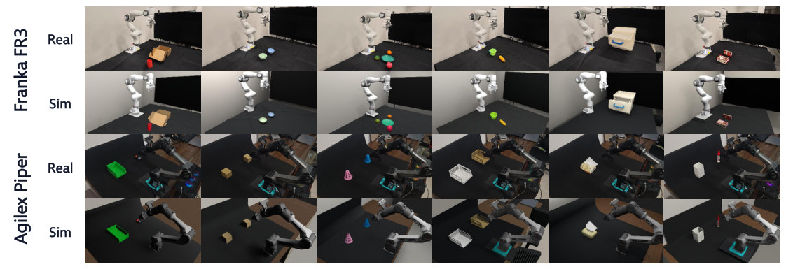
怎么读这张图
- 上两行 Franka FR3：Real 和 Sim 同一视角，比物体位置和背景；两只碗在第 2 列。
- 下两行 Agilex Piper：同样成对；Real 右上是木地板，Sim 是一整块棕色平面，背景只求大致相近（我的观察）。
Running example 在这一步
planning 写下蓝碗、绿碗及其大致尺寸；refinement 改到过关。F5 的逐场景数字只有早先的 Codex 批次（Table 10）：Depth .080 m · Lab 10.41 · SSIM .7468 · CD .0167 m · F1@1cm .3212 · BBox .0471 m。DSH 批次没有逐场景表。
Stage 3 MuJoCo scene and task-interaction checks 通过 visual check 的场景 → MuJoCo 场景 SM，附探针报告，状态 provisional 或 needs_repair
- Why：像不等于能用。MuJoCo 把 mesh collider 当凸包（App. D.1），所以碗的 mesh 会把碗口填实，另一只碗放不进去（后半句是我按例子说的）。
- 原则：每个分类和物理值都是假设；prompt 明写
real_world_verified=false，"the current runner has no independent real-world measurement comparator"。
flowchart TD C["Classify
每个 mesh 一个 role 和 collision
碗 → open_container"] --> M["Export
场景 + 已知机器人 → S_M"] M --> V["Visual prior
只看图估质量摩擦范围
仅当有 free-joint 物体"] V --> S["static 探针
3 s，查自发平移和旋转"] S --> G["grasp 或 articulation 探针
1、3、10 N 夹持"] G --> J["Repair（有明确证据才做）
一次改一个原因，新 candidate XML"] J --> K["Independent check
同力度重跑 + 4 view 回归"] K -->|不过| J K -->|过| O["status=provisional
real_world_verified=false"]:::win
分类表（App. D.1 的 Stage 3 prompt；F5 一列是我按规则套的，论文没给 F5 的分类）
| role | 是什么 | 碰撞和关节 | F5（推断） |
|---|---|---|---|
visual_only | 墙、帘子、背景 | none | 背景墙 |
static | 桌面、托盘底，需要托住物体的面 | 保留碰撞，fixed | 黑桌面 |
dynamic | 可抓的独立刚体 | free joint，box 碰撞；空心杯碗桶用 open_container（一底四壁，prompt 说只是近似），不用实心盒或 mesh | 两只碗 |
operable | 真有 hinge 或 slide 的任务部件 | hinge 或 slide | 无（F1 的抽屉才有） |
compound | 固定在运动物体上、要碰撞的部件（篮壁、把手） | box，attached_to 主体 | 无 |
探针做什么（real2sim.stage3.physics_probe）
- objects：列出任务物体的位姿、质量、摩擦、可动性；固定物体不算动态验证过。
- static：跑 3 s，看可动物体有没有自己平移或转动；物体掉落或滚走就是没准备好。
- grasp：一个简化夹爪，不是真夹爪：两个对称耦合的 0.025 kg pad，sliding friction 1.0，200-gain position servo，每 jaw 硬上限 10 N；
--normal-forces 1 3 10，必要时加 2、4、6 N，夹出最低成功力度的区间，再和 visual prior 比。 - articulation：没有 free-joint 物体时不抓，改对 hinge 或 slide 部件施加限时 force 或 torque，看位移和稳定。
- patch：可改 collision、
center_of_mass、mass_kg、position、quaternion；try一次只动一个参数；不许为过仿真牺牲四视角对齐，不许动机器人。 - 验收：候选必须通过独立的 static 和 grasp 重跑，否则同一对话收到 repair 反馈（
MAX_REPAIR_TURNS的值没写）；改了可见几何或位姿，还要回到 4 个 reference view 查回归。
- 这是合理性检查，不是物理辨识："Without matched real-world observations, neither a successful grasp nor a visual guess validates the true mass or friction."（App. D.1）
- 没有统计：摘要里的 18/18 是 visual check。Stage 3 过了多少场景、修了几次，§4 一个数字都没给。
Running example 在这一步
按规则，两只碗是 dynamic + open_container，所以绿碗才放得进蓝碗；有 free-joint 物体，于是先看图估质量摩擦区间，再夹绿碗 1 / 3 / 10 N，1 N 失败属于正常。F5 的实际结果论文没有报告。
Stage 4 Three-pass policy development MuJoCo 场景 + q → 锁定版本的 policy.py + 经验文档
- Why：先用真值定下 task decomposition 和 action logic（Fig. 4 写作 "fast skill bootstrapping"），再换成真机也有的观测，最后才加扰动（§3.2）。
- agent：Codex，GPT-6 Astra，high reasoning。每一遍开新对话，只带上一遍的 policy 和经验。
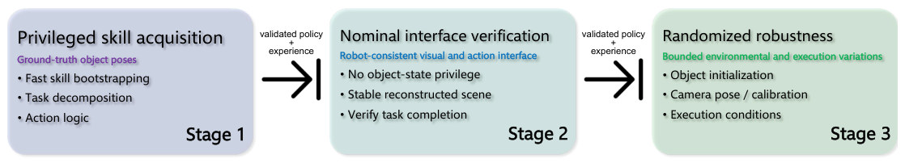
怎么读这张图
- Stage 1 "Privileged skill acquisition"（
privileged_exact，这里叫 Pass 1）：可调api.object_poses()，把 task decomposition 和 action logic 定下来。 - Stage 2 "Nominal interface verification"（
visual_exact，Pass 2）：真值拿掉，只能用真机也有的api.observe()，在稳定场景里完成任务。 - Stage 3 "Randomized robustness"（
visual_randomized，Pass 3）：接口不变，扰动 object initialization、camera pose / calibration、execution；扰动幅度只写了 "bounded"，没给数。 - 中间箭头：agent 判断完成后渲一帧作证据，把 policy 和经验笔记交给下一遍的新对话。上一遍的 policy 被当草稿，prompt 要求重新观测、删掉无依据的硬编码坐标（App. D.2）。
flowchart LR A["Pass 1
object_poses() 真值"] --> B["Pass 2
observe() 无真值"] B --> C["Pass 3
扰动位姿、相机、执行"]:::win
- policy.py 的禁令：不许 import、读文件、碰仿真内部、用 pick/place 或 grasp helper、joint override、success oracle（App. D.2）。
- practice：写 policy 时可以一次发一条 CLI 命令试探，返回 JSON 和两张图；在 visual 阶段可能不开放（代码里有 "Practice CLI is unavailable in this visual stage"）。
- 锁版本：开发时可以改，最终评测时版本固定，动作仍随观测变化（§3.2）。
Running example 在这一步
§4.4 用的正是这个例子：bowl stacking 要的是稳定的抓取和放置接触，不只是定位；反复的仿真尝试让 agent 把这些手法写进 policy 步骤和经验。具体写了什么，论文没给。
Stage 5 Sim-to-real transfer and real execution policy + experience memory → 真机上的新 agent 对话 → 任务结果，可写回经验
- 带过去的：policy（验证过的任务步骤和观测-动作逻辑）+ experience memory（有效做法、失败案例、感知难点、该试和该避开的）。
- 不能复用的：仿真坐标和成功结论；新对话必须用真实观测重定位。记忆里没有物体真值和仿真内部量（§3.3），但阶段间的经验摘要可以含标明为估计的坐标（App. D.2）。
- 安全层：自动检查坐标系和相机标定，限制动作幅度，限定针对机器人和任务的安全工作区；违规动作不执行（§3.3）。
- 观测频率：真机 prompt 要求在关键动作前后多看几次，确认物体和机器人状态再决定继续、调整、重试或停。
flowchart TD P["新 agent 对话
policy + experience memory"] --> O["Fresh observation
wrist RGB-D + SAM3
+ 第三人称图"] O --> G["Robot-side safety gate
标定、动作限制、工作区"] G -->|违规| N["不执行"]:::gap G -->|通过| A["动作
EE pose、gripper、waypoints"] A --> J["agent 看结果
继续、调整、重试或停"] J -->|未完成| O J -->|完成| E["完成判断
按当前观测，无内置信号"]:::win
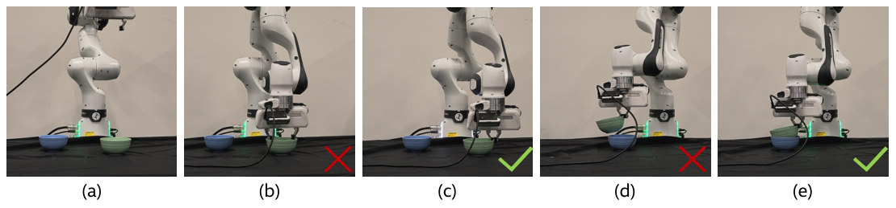
怎么读这张图
- (a)：蓝碗在左，绿碗在右，手臂在上方。
- (b) ✗ 和 (c) ✓：夹爪都下到绿碗处，两帧的差别肉眼很小，图注没解释。
- (d) ✗：绿碗被提起但倾斜地悬在蓝碗上方。
- (e) ✓：绿碗落在蓝碗上。图注没说这几帧是同一 episode 的重试还是不同 trial。
真机上到底跑了什么
| 项目 | 论文写的 | 来源 |
|---|---|---|
| 机器人 | Franka FR3 和 Agilex Piper，各 9 个任务 | Table 5 |
| 跑的东西 | Codex agent（GPT-6 Astra，high reasoning）新开对话，执行锁定的程序，模型一直在回路里 | §3.3、§4.1、§5 |
| 观测 | wrist RGB-D + SAM3 的物体位置估计、第三人称图、EE 和夹爪状态、估计的 wrist 相机位姿 | §3.2 |
| 动作 | EE pose 指令、gripper、sparse trajectory，经安全层 | §3.2、§3.3 |
| 结果 | 18 个任务 8 个成功（44.4%）；这 8 个都在 sim 成功的 10 个之内 | §4.4、Table 4 |
| 没写 | 每任务 trial 数；哪 8 个任务；sim 失败的 8 个有没有上真机；一次任务耗时和模型调用数；安全层拦截次数；api.reset() 在真机上怎么实现、有无人工复位；相机型号和手眼标定方法；谁判定成功；真机 prompt（App. D.2 只贴了 SIM 的） | 通读全文 |
Running example 在这一步
真 Franka 用 wrist RGB-D 和 SAM3 重新定位两只碗，抓绿碗、放蓝碗上（Fig. 5）。F5 在不在成功的 8 个里，论文没有逐任务表。
Stage 4–5 Execution-grounded policy loop 和共享接口 一次程序调用里可以多次观测和动作；agent 在调用之间决定下一步
- Why：写死的程序碰到预想外的情况难改，逐步问模型又慢；折中是程序内部循环，程序之间由 agent 判断（§5）。
- 结果上报：
policy.py返回completed、checkpoint或failed；checkpoint不算失败，是让外层 agent 接手看一眼。 - 无 oracle：agent 从观测判断完成，并交一帧渲染图作证据；但 App. D.2 的经验 prompt 里有 "Independent stage result"（
physical_verdict），这个独立判定的定义论文没写。
flowchart TD R["run_policy
observe 和 act 交替
找碗 → 抓 → 复看 → 放"] --> S["返回 status
加动作结果、错误、最新观测"] S -->|checkpoint 或 failed| A["Agent 决定
同一对话里看结果和图"] S -->|completed| D["交证据
渲染帧 + 经验摘要"]:::win A --> C["继续
场景保留，重新 observe"] A --> T["reset 重试
Pass 3 重采扰动"] A --> V["改写
policy.py"]
共享接口（这是 App. D.2 SIM prompt 里的版本；§3.2 说 Piper 和 Franka 一致，贡献 3 说 sim 和真机一致）
| 调用 | 白话 |
|---|---|
api.state() | EE 位姿、wrist 相机位姿、夹爪宽度和目标、是否在动；不含物体位姿 |
api.observe(queries) | SAM3 + depth 的位置估计、wrist RGB、固定第三人称 RGB；被遮挡的物体就是缺席 |
api.robot.move_pose(...) | 世界系位姿，四元数顺序 (w,x,y,z) |
api.robot.gripper(width_m) | 宽度 0 到 0.08；"closing does not guarantee a grasp" |
api.robot.move_trajectory(waypoints) | 稀疏世界系路点，可带夹爪宽度 |
api.reset() | 恢复当前阶段的初始场景，重试 |
api.return_control(reason) | 交回 checkpoint，不 reset |
api.stop() | 停止运动，"it is not proof of success" |
Running example 在这一步
绿碗放歪时（类似 Fig. 5(d)）程序可返回 checkpoint，agent 看图后决定从当前状态继续，或 reset 重来，或改 policy。这个走法是按接口推演的，论文没有给 F5 的 trace。
Recap：例子覆盖了论文的哪些 idea
| 论文里的 idea | 例子里在哪体现 |
|---|---|
| Robot-anchored metric scale | Stage 1：Franka URDF 把 F5 的 VGGT 重建定到米 |
| Agentic 重建 + 标量反馈 + 程序验收 | Stage 2：蓝碗绿碗按 D、C、Q 改到过关 |
| 物理角色和碰撞的分类 | Stage 3：碗 → open_container，桌 → static |
| image-only 先验、探针、repair | Stage 3：看图估区间，夹绿碗 1、3、10 N |
| 三遍开发 | Stage 4：真值 → 视觉 → 随机化 |
| 一次调用多次观测和动作，agent 决定继续、重试、改写 | Stage 4–5 loop：绿碗放歪的处理 |
| Experience memory，真机重新定位 | Stage 5：叠碗的手法随文字过去，碗位重新观测 |
| Robot-side safety | Stage 5：违规动作不执行 |
| 模型对比和消融 | E2、E4：F5 在各变体下的数字 |
Results
场景的视觉指标最好，真机 18 个任务成了 8 个；损失主要发生在 sim 里，不在迁移
顺序同论文：E1 视频能不能变成米制、视觉一致的场景 → E2 换模型会怎样 → E3 策略在 sim 和真机上成不成 → E4（附录）标定和标量反馈是否必要。E1、E2、E4 比场景误差，E3 比成功率；全文没有比时间。
E1视频能变成米制、视觉一致的场景吗？§4.2 · Table 2
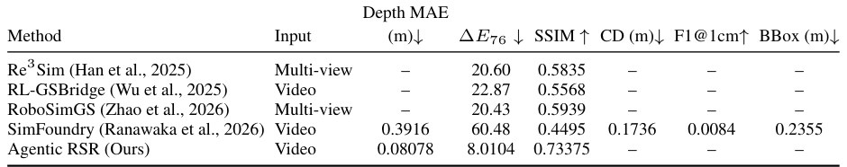
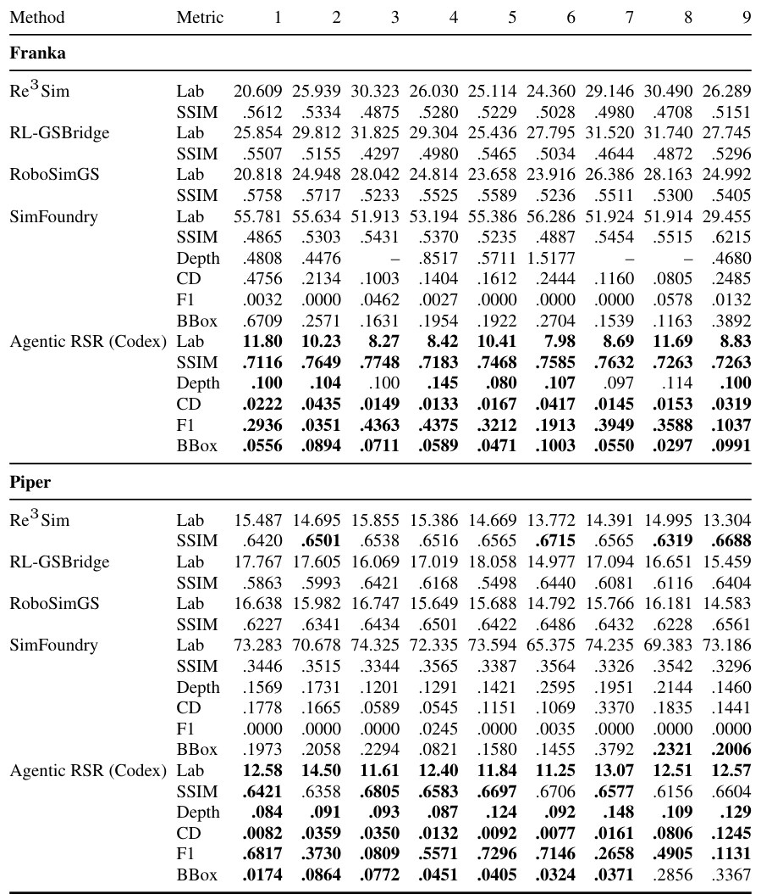
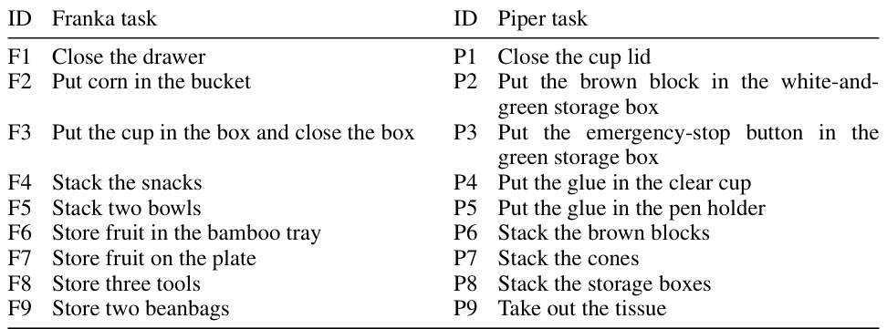
- 说明什么
- depth 和颜色误差最低，SSIM 最高。Depth MAE 0.08078 m 对 SimFoundry 0.3916 m；ΔE76 8.0104 对最好的基线 20.43；SSIM 0.73375 对 0.5939。18/18 过 joint visual check，首次过关平均 2.22 轮（五轮上限）。
- 在故事里
- 证明链条第一环：一段视频加 URDF 够建出下游能用的场景。
- 指标
- 4 个 reference view 上的 Depth MAE、Lab ΔE76、全帧灰度 SSIM；过关条件见 Stage 2。CD、F1@1cm、BBox 是物体级几何。
- 怎么评测
- 同样的 18 段源视频；基线数字沿用早先的评测，没有重跑。
- 基线的空格是输出格式不兼容，不是它们做不到。
- 参考深度来自同一段视频的重建，不是实测真值（§3.1）。
- 偏向本文（推断）：agent 的反馈和最后的评分用同样的指标、同样的 4 个 view，全文没有 held-out view。
- 物体级几何缺失：DSH 批次没报告。只有早先的 Codex 批次有：42 个物体，CD 0.0303 m，F1@1cm 0.3655，可见 bbox 中心误差 0.0869 m（App. C.2），也就是平均差 8.7 cm；这些指标的参考几何从哪来没写。
E2换一个模型驱动 DSH 会怎样？§4.3 · Table 3
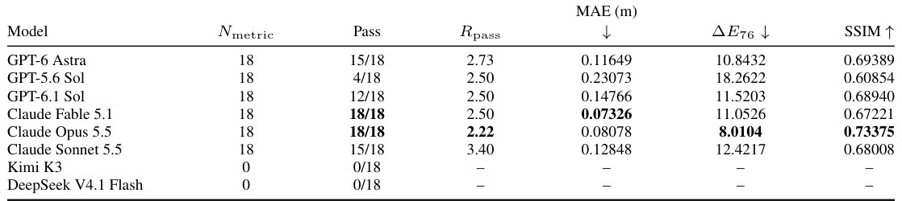
- 说明什么
- 过关率很依赖模型。Claude Opus 5.5 和 Claude Fable 5.1 都是 18/18；GPT-6 Astra、Sonnet 5.5 是 15/18；GPT-6.1 Sol 12/18；GPT-5.6 Sol 4/18；Kimi K3、DeepSeek V4.1 Flash 0/18（工具交互没走完）。Fable 的 MAE 最低（0.07326 m），Opus 的 ΔE76 和 SSIM 最好。
- 在故事里
- 说明 harness 能换模型，主配置选 Opus 有依据；作者强调这只描述这个流程，不是通用排名。
- 指标
- Pass：通过完整 joint visual check 的场景数；Rpass：过关场景上首次过关的平均轮数；误差均值含没过的场景（Nmetric = 18）。
- 怎么评测
- 2026-10-06 的汇总，每个配置都试了 18 个场景。
- 三个 GPT 配置、Opus、Sonnet 是五轮上限；Fable 和两个失败配置的上限没报告。
- 同一 GPT-6 Astra 在 DSH 里 15/18，在 Codex 里 18/18（Table 8，Rpass 3.80），但批次和轮数不同，作者说跨批次比较不隔离模型或 harness。
E3策略在 sim 和真机上成功了多少？§4.4 · Table 4 · Fig. 5
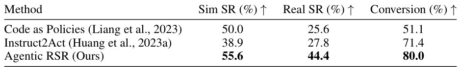
- 说明什么
- 真机成功率最高。Agentic RSR 8/18 = 44.4%，Instruct2Act 5/18 = 27.8%，Code as Policies 25.6%。sim 里 10/18 = 55.6%，其中 8 个上真机也成功，所以 conversion 80.0%。换个看法（我的算术）：18 个任务里 8 个丢在 sim，2 个丢在迁移，瓶颈在 sim 开发本身；样本小，一个任务就差 10 个百分点。
- 在故事里
- 这是唯一的真机证据，撑起全文 "retain much of their aggregate task performance" 的结论。
- 指标
- SR：Agentic RSR 和 Instruct2Act 是完成任务的比例；Code as Policies 是记录的真机 attempt 的 task-equal 平均。
- Conversion：基线是 100 × Real SR / Sim SR（未配对）；Agentic RSR 是 sim 成功的任务里真机也成功的比例（配对）。
- "完成"由谁判定、判定标准是什么，§4.1 没写。
- 怎么评测
- 同 18 个任务，Franka FR3 和 Agilex Piper；sim 在随机化条件下，真机用记录的 attempt。
- 基线保留各自的 native policy 格式；Code as Policies 的硬件场景和这 18 个任务不完全对应，作者说真机比较是描述性的。
- 没写：每任务 trial 数、哪些任务成功、Fig. 5 以外的失败案例。
- 没写：Table 4 的策略在哪批场景里开发；策略保留 Codex 实现，而场景结果已换成 DSH（§4.1），v2 也更新过 Real-to-Sim 实验。
- 没做的对照（我的判断）：不经 sim 直接上真机、去掉 experience memory、换粗糙场景。所以这张表不能说明重建质量或 sim 练习对真机成功贡献多少。
E4Robot-anchored 标定和标量反馈是不是必要的？App. C.3 · Table 9、11
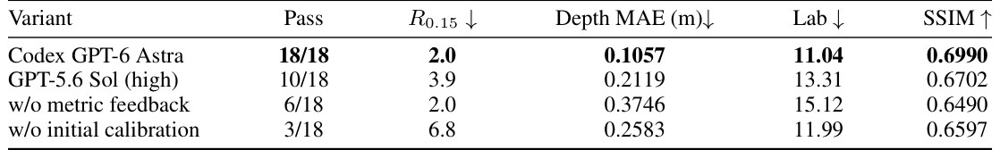
| F5 · Stack two bowls | Pass | Last round | D (m) | Lab ΔE76 | SSIM |
|---|---|---|---|---|---|
| 完整系统（Codex GPT-6 Astra，Table 10） | Yes | 未报告 | .080 | 10.41 | .7468 |
| GPT-5.6 Sol | Yes | 9 | 0.1389 | 8.89 | 0.7757 |
| No metric feedback | No | 10 | 0.1616 | 7.04 | 0.7406 |
| No initial calibration | Yes | 7 | 0.1477 | 9.01 | 0.7552 |
我从 Table 10 和 Table 11 抄出的 F5 一行，不是作者的表。
- 说明什么
- 去掉标定最伤，且只看画面发现不了。过关数 18/18 → 3/18；ΔE 几乎不变，depth 翻倍多。去掉标量反馈 6/18，depth 0.3746 m。F5 就是例子：没有标量反馈时颜色最好（Lab 7.04），depth 却超线（0.1616 m），没过关。但 F5 恰好是去掉标定还能过的 3 个之一，所以这个结论来自聚合，不来自 F5。
- 在故事里
- 支撑 "robot-anchored 定尺度必不可少" 和 "程序评估比 agent 自评可靠" 两点。全文只有这组实验直接检验尺度这一环。
- 指标
- Pass：joint visual check；R0.15：达到 depth 门槛的场景上的平均首次轮数，它只看 depth，和 Rpass 不同。
- 怎么评测
- 历史 Codex 批次，同 18 个场景，最多 10 轮。主实验的 Claude Opus 5.5 没有做这组消融。
- 去掉标定后，depth 参考和评分怎么定，附录没展开。
- 按 Table 11 我数的：没有标量反馈时 Franka 0/9、Piper 6/9；没有标定时 Franka 2/9、Piper 1/9。
- 完整系统的改善幅度：Depth MAE 0.9036 m → 0.1057 m，ΔE 24.84 → 11.04（App. C.2）。
Limits
局限和开放问题
论文自己说的
- GPT-6 Astra 配 Codex 时，agent 行为随设备、调用接口甚至时间变化，原因没测；依赖闭源服务，难复现（§5）。
- 模型延迟和离散 checkpoint 限制了对快速接触变化的响应，比不上 π₀ 这类高频 VLA；作者建议高层程序配快速低层闭环（§5）。
- Depth 指标量的是和视频重建的一致性，不是真值误差（§3.1）；DSH 批次没有物体级几何（§4.2）。
- mass 和 friction 没有真实测量，物理检查只是 sanity check（
real_world_verified=false，App. D.1）。 - Code as Policies 的真机比较不是配对的（§4.4）；跨批次比较不隔离模型或 harness（§4.3）。
我的判断（论文没说）
- 尺度 s 没有独立验证，全局就这一个数，错了会传给所有物体。
- Stage 3 没有任何统计，"checks task-relevant interactions" 这句话目前只有方法描述和 prompt，没有结果数字。
- 方法依赖绕拍视频和可见的机器人；是否适用固定相机的录像、运动中的机器人，没有实验。
- role 表里可动物体只有刚体（
dynamic写的是 rigid object），软物（F9 beanbag、P9 tissue）只能靠刚体或接触 proxy；软物上的结果没有单独报告。
For Agent-centric real-to-sim
对我们有什么用
- 相机和尺度：它把 URDF 当尺子，用 mask 为主的排序损失从 128 个旋转起点里选解，证据和我们的
cameras_poses_fit同类（机器人 mask），多起点加排序可以借。Table 9 还给了一个警告：标定错时 Lab 几乎不变，只看画面查不出。但它用的是绕拍视频，没有位姿真值，不能说明它能修好 DROID 约 20 cm 的外参误差。 - 角色和物理：五种 role 加
open_container、attached_to是一张现成的碰撞分类表；3 s 静置和 1、3、10 N 夹持探针便宜，可以放在我们 replay 之前。但它判的是物理角色，不是任务角色，解决不了把 "take the lid off" 当成 "放进容器" 的错；质量摩擦它也只是假设，和我们的 assumed 同级。 - Sim-to-real：我们只回放，它走到了真机：同一 API、靠新观测重定位、经验写成文字，不训练权重。这条路比训练 policy 轻，可以作为我们第一份 sim-to-real 证据的候选（我的判断）。但 8/10 没有 "不经 sim" 的对照，不能说明 sim 练习本身有用；我们若做，应从一开始加上这个对照，并记录每任务 trial 数。